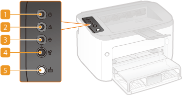

Operation Panel


 (Power) indicator
(Power) indicator
Lights up when the machine is powered ON.
 (Alarm) indicator
(Alarm) indicator
Lights up or flashes when a paper jam or other error occurs. Solve the problem following the message displayed in the Printer Status Window. When an Error Message Appears
 (Job) indicator
(Job) indicator
Lights up when there is print data that is being printed or waiting to be printed. Flashes when printing has been canceled.

 (Cancel Job) key
(Cancel Job) key
Cancels a print job that is currently printing. Canceling Print Jobs

 (Paper) key
(Paper) key
Flashes when the machine is out of paper, when the paper is the wrong size, and after other errors when the paper needs to be checked. Reset the paper and press the key to restart printing.

You can also use the (Paper) key to print a list of network settings (with the machine ready to print, press the key and hold it down for 3 seconds). Viewing Network Settings
(Paper) key to print a list of network settings (with the machine ready to print, press the key and hold it down for 3 seconds). Viewing Network Settings